library(tidyverse)
library(visu)9 Basic bar charts
9.0.1 How bar() works
bar() plots statistics already calculated and sitting in a data frame — one row per bar, an x category paired with an already-computed y value (geom_col()’s job) — rather than counting raw observations itself (geom_bar()’s job). dat needs to already be aggregated (e.g. via count() or summarise()) before it’s passed in.
dat— the data frame, one row per barx— unquoted column name for the x-axis categoryy— unquoted column name for the already-computed value each bar showsx_lab— optional x-axis titley_lab— optional y-axis titletitle— optional plot titlefill_family— bar colour: annc_alt1name ("pink","blue3"),"multi"(one colour per bar, spread across families), or"<family>_seq"(one shade per bar within a single family — ordered x variables only, max 5 bars)base_size— base font size in pt, scales all text viatheme_house()horiz—FALSE(default) for upright bars,TRUEto flip horizontal. Whichever ofx_lab/y_labends up on the narrow left margin gets rotated vertical and wrapped once it’s long enough (3+ characters) — that’s alwaysy_labwhen upright, but swaps tox_labonce flipped (see below)plot_width— feeds the label-wrapping maths only, not the plot’s actual rendered size (see below)plot_height— feeds the wrapping maths for whichever label is on the left margin (see below)
9.0.1.1 plot_width and plot_height, in more detail
They feed wrap_text()/resolve_y_lab()’s wrapping calculations only — how many characters fit before the x-axis labels, title, or a rotated y-axis title get wrapped — not the plot’s actual rendered size. They only matter once something’s long enough to need wrapping in the first place; short labels and titles won’t react to either. If this were exported via knitting, the chunk’s own fig-width/fig-height options would need to be kept in sync with these by hand — though options exist (e.g. knitr::opts_current$get("fig.width")) to link the two automatically, not yet set up here.
9.0.2 Examples
Same data as 2_geom_gallery.qmd’s geom_col example — one row per class, so bar() can be compared directly against the plain geom_col(fill = "steelblue") version there.
mpg_class <- mpg %>% count(class)9.0.3 No colour palette
Default fill_family — bar()’s own default, "pink".
bar(mpg_class, class, n)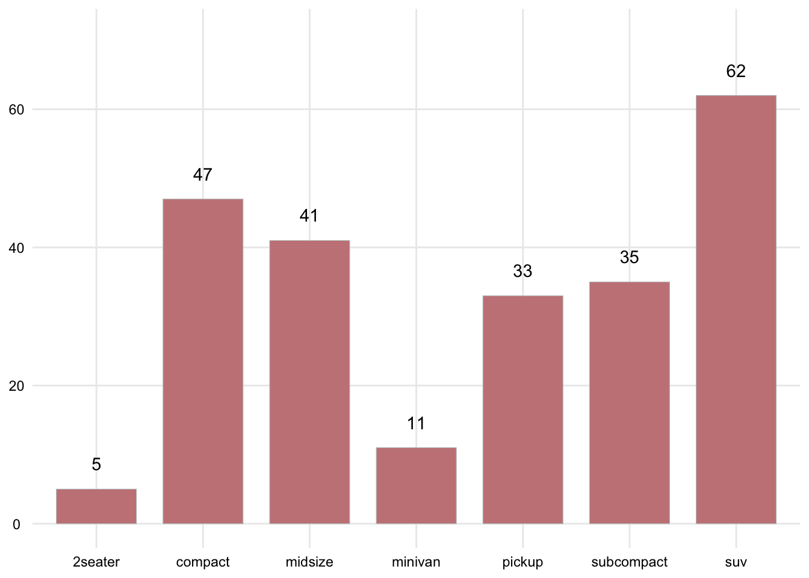
9.0.4 Bars all the same colour
fill_family given the name of a different nc_alt1 family — still a single colour, applied to every bar.
bar(mpg_class, class, n, fill_family = "blue")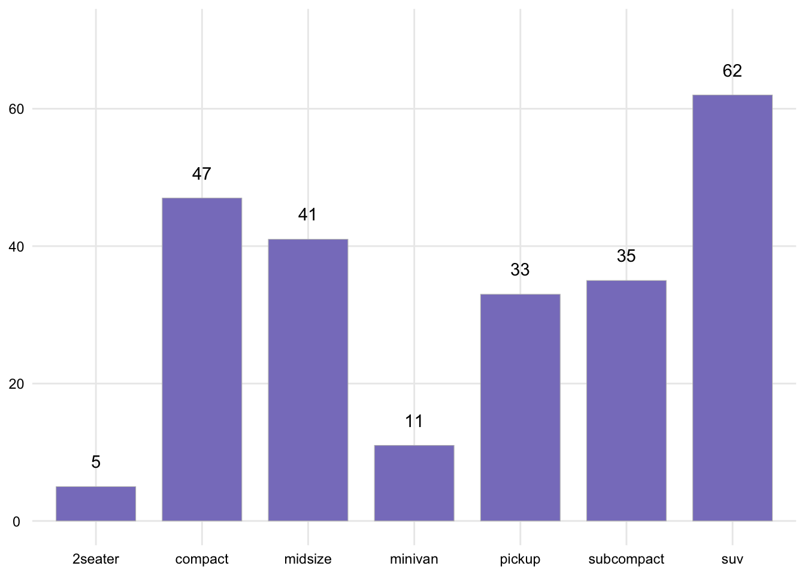
9.0.5 A specific shade
fill_family also takes a family name with a shade number attached (1-5) — resolve_pal_colour() resolves the string, family name alone defaults to shade 1.
bar(mpg_class, class, n, fill_family = "mint4")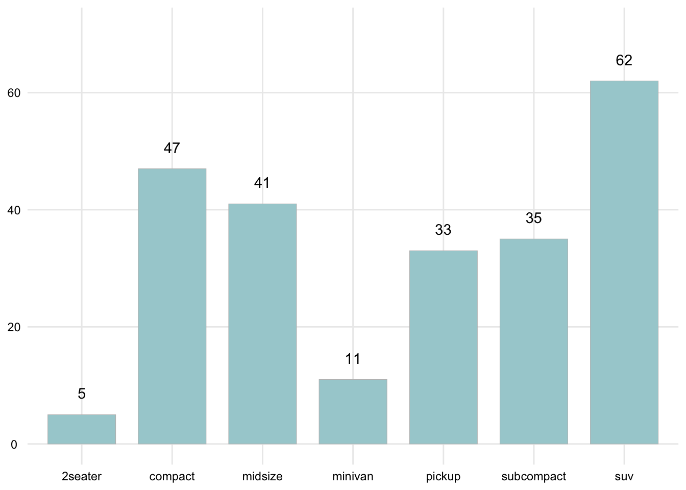
9.0.6 Bars different colours
fill_family = "multi" — bar() works out how many bars there are and pulls that many colours from give_categorical_colours_pal() internally, one per bar.
bar(mpg_class, class, n, fill_family = "multi")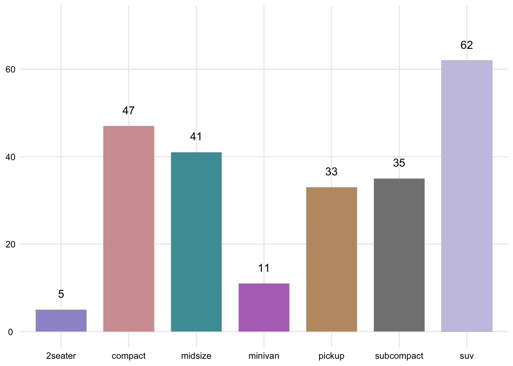
9.0.7 Bars coloured sequentially within one family
fill_family = "<family>_seq" — each bar gets a different shade from that one family’s tint ramp instead of spreading across families, for when the x variable is ordered (so the colour progression itself carries meaning). Capped at 5 bars, since a family only has 5 shades — diamonds$cut is a natural fit, an ordered factor with exactly 5 levels.
diamonds_cut <- diamonds %>% count(cut)
bar(diamonds_cut, cut, n, fill_family = "mint_seq", title = "Diamonds by cut")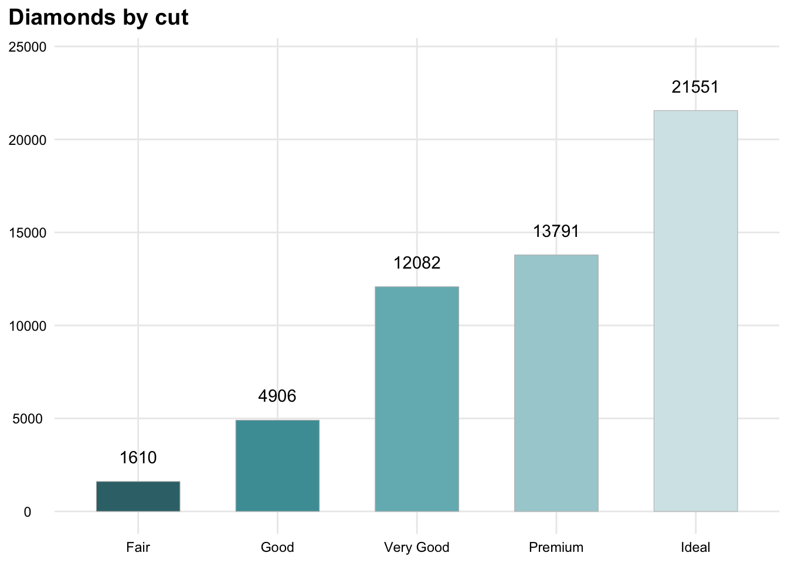
9.0.8 Custom labels and title
x_lab, y_lab, and title are optional character strings, wrapped to plot_width. A short y_lab (3 characters or under) stays horizontal.
bar(mpg_class, class, n, x_lab = "Vehicle class", y_lab = "Count", title = "Vehicles per class")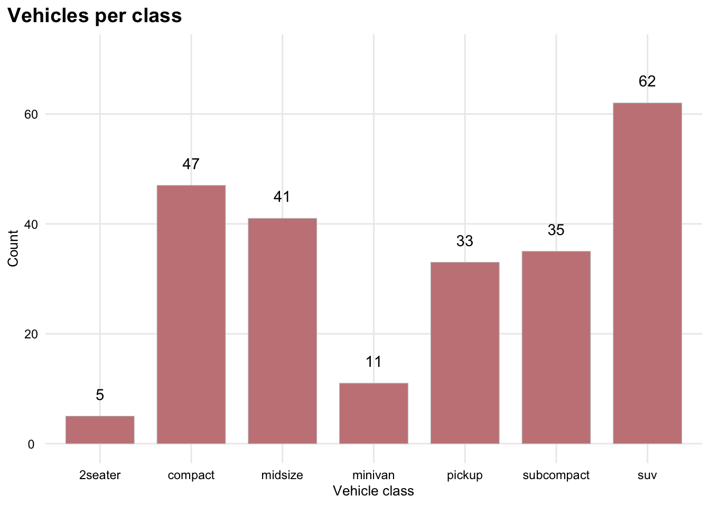
9.0.9 Long y-axis label
Past 3 characters, y_lab rotates vertical and wraps to plot_height instead — resolve_y_lab()’s job.
bar(mpg_class, class, n, y_lab = "Number of vehicles in the dataset")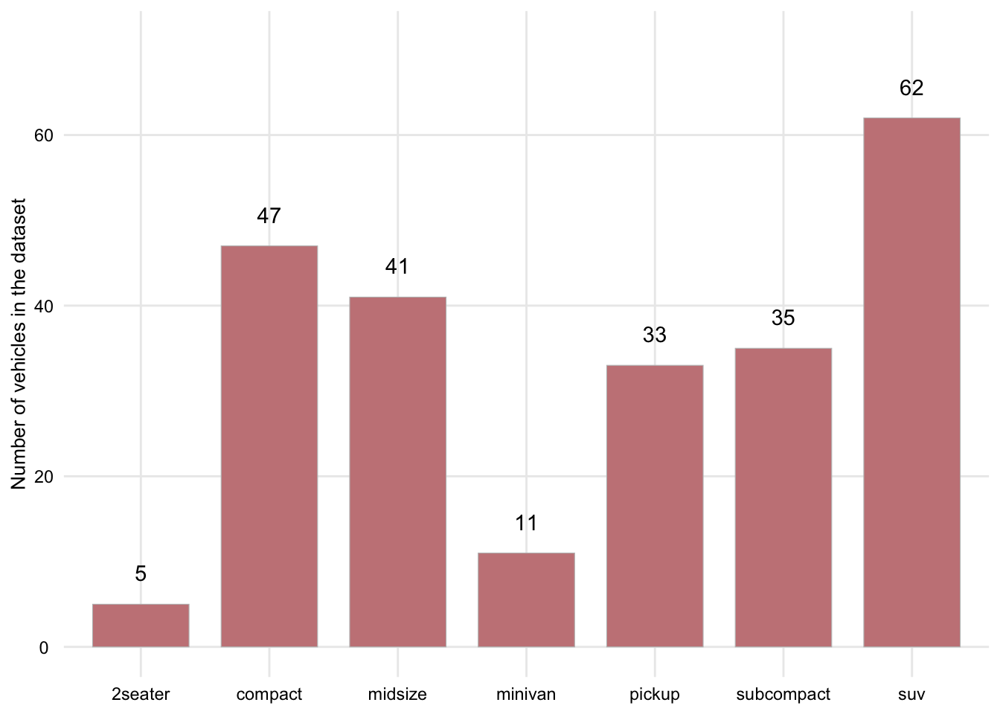
Narrowing plot_height wraps that same label harder.
bar(mpg_class, class, n, y_lab = "Number of vehicles in the dataset", plot_height = 2)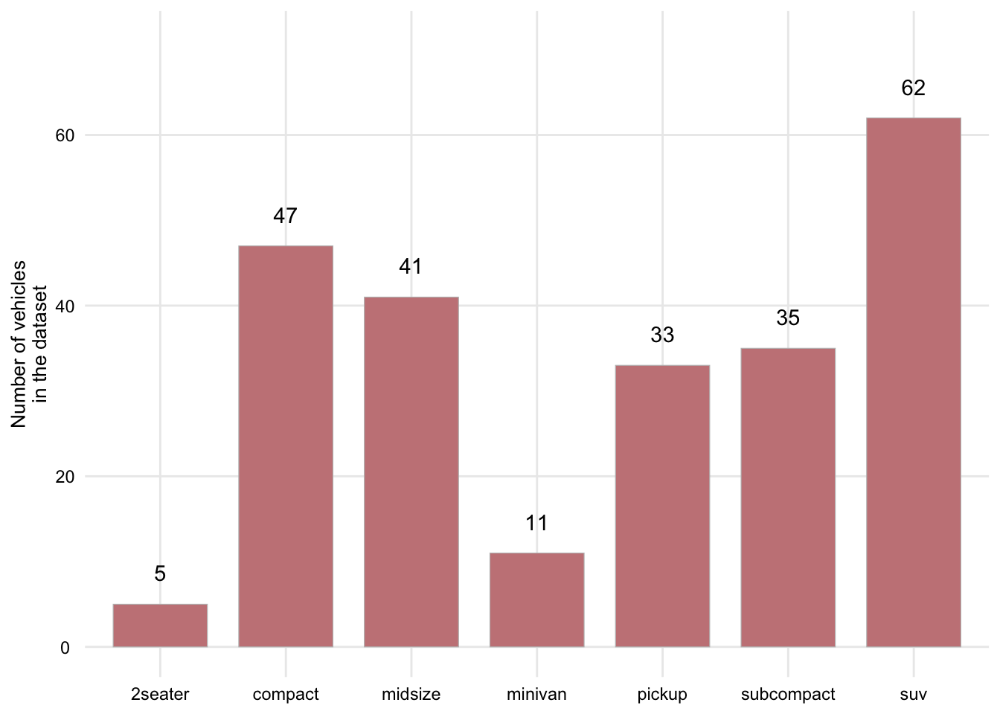
9.0.10 base_size
Scales all text through theme_house().
bar(mpg_class, class, n, title = "Larger base size", base_size = 16)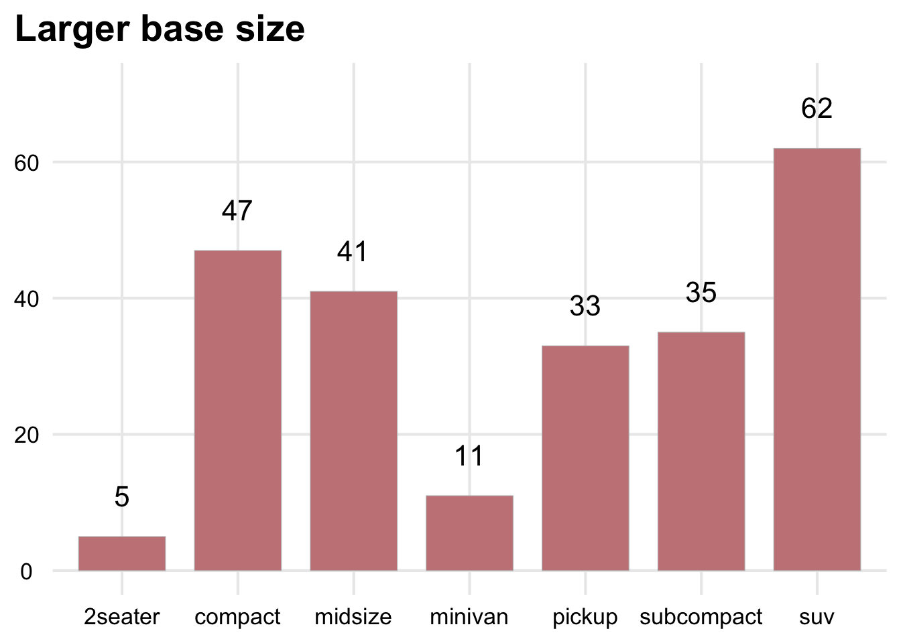
9.0.11 More categories
bar_width_from_n() widens bars automatically as the category count rises (so they don’t thin out to slivers), and past 8 categories the x-axis labels switch from wrapped/horizontal to a single angled line instead — manufacturer has 15 levels, several with longer names, a harder test than class’s seven short ones.
mpg_manufacturer <- mpg %>% count(manufacturer)
bar(mpg_manufacturer, manufacturer, n, fill_family = "multi", title = "Vehicles by manufacturer")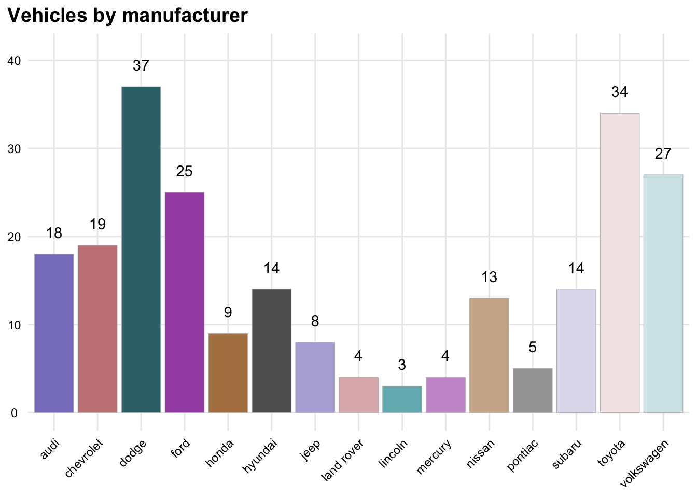
9.0.12 plot_width
plot_width only feeds the label-wrapping maths (wrap_text()/resolve_y_lab()) — it doesn’t set how wide the plot actually renders. That’s controlled separately, here via the chunk’s own fig-width, or via finalise_plot()’s ggsave() width when exporting rather than knitting. Set both together so the wrapping assumption matches the real output.
bar(mpg_manufacturer, manufacturer, n, fill_family = "multi", title = "A much narrower plot", plot_width = 3)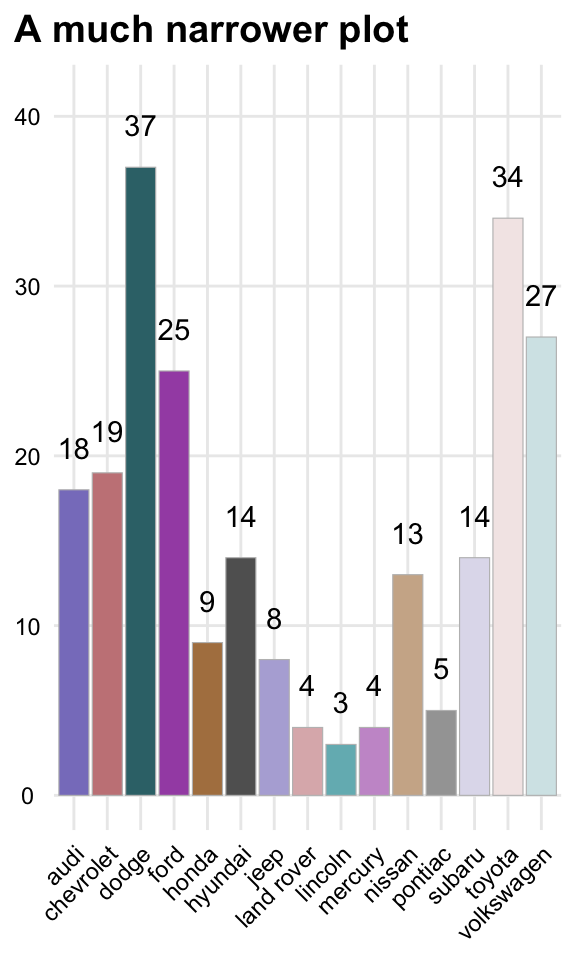
9.0.13 horiz
horiz = TRUE flips to horizontal bars. Each category gets its own row rather than competing for horizontal space, so the 45° rotation from the previous section doesn’t kick in at all here, even with the same 15-category data.
bar(mpg_manufacturer, manufacturer, n, fill_family = "multi", horiz = TRUE, title = "Vehicles by manufacturer")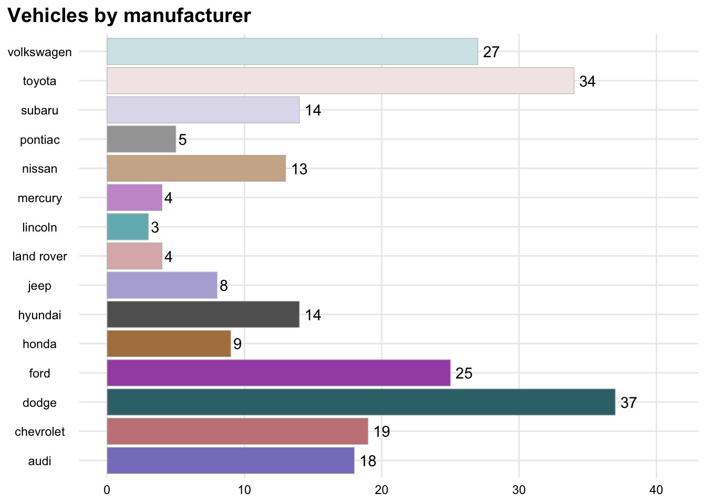
Flipping also swaps which label sits on the narrow left margin — a long x_lab now gets the rotate-vertical-and-wrap treatment that y_lab got in the “Long y-axis label” section above, rather than x_lab’s usual plain wrapping.
bar(mpg_manufacturer, manufacturer, n, fill_family = "multi", horiz = TRUE, x_lab = "Manufacturer of vehicle", title = "Vehicles by manufacturer")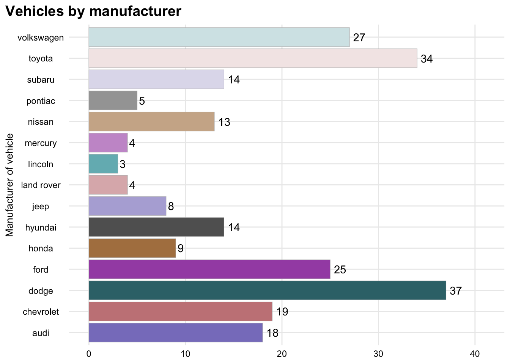